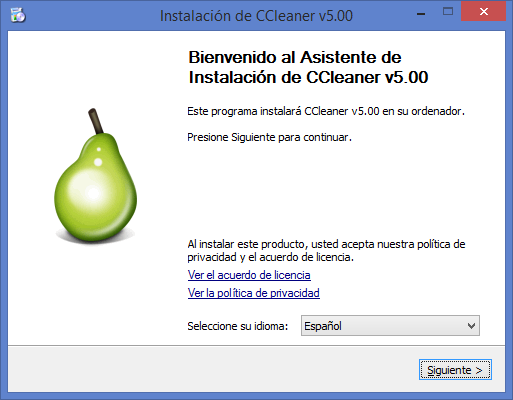
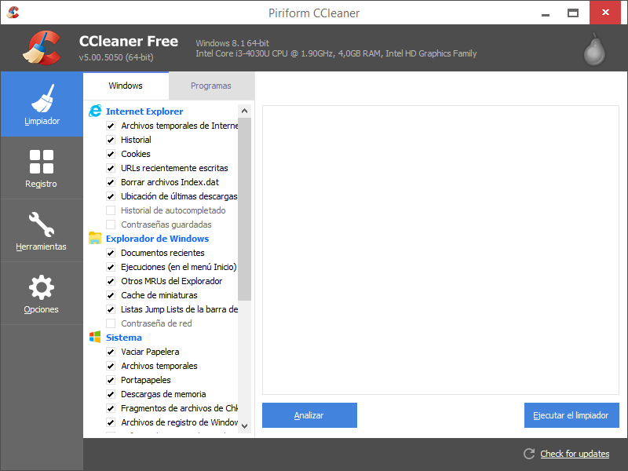
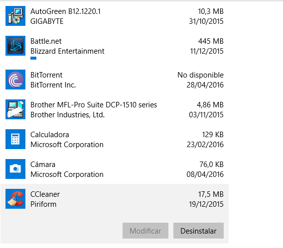

-Cómo instalar CCleaner-
PASO 1: Haz clic en para empezar archvio ccsetup el proceso de instalación. Si aparece el cuadro "Abrir archivo" – Advertencia de seguridad , haz clic en "Si" para activar la siguiente pantalla:
PASO 2: en "Siguiente" para activar la pantalla Opciones de instalación – Seleccionar algunas opciones adicionales, luego haz clic en "Siguiente" para activar la siguiente pantalla.
PASO 3: Haz clic en "Instalar" para activar la pantalla que muestra el progreso de Instalación.
PASO 4: Haz clic en "Terminar" para finalizar la instalación de CCleaner y asegúrate de que la opción "Habilitar el escaneo inteligente de cookie" está desabilitada en la ventana que surgirá a continuación.
-Resultado-

-Cómo desinstalar CCleaner-
Una vez tengamos nuestro ordenador optimizado gracias a CCleaner, podemos dejar el programa instalado en nuestro ordenador o simplemente desinstalarlo hasta la próxima vez que queramos optimizar nuestro sistema.
PASO 1: Para desinstalar CCleaner tenemos que ir a la opción de “Agregar o Quitar programas” y seleccionar CCleaner y hacer clic en “Desinstalar”.

PASO 2: Una vez hagamos clic en “Desinstalar”, nos saldrá el Asistente de Desinstalación y hacemos clic en "Siguiente".
PASO 3: La siguiente pantalla nos indica la ruta donde se supone que está instalado CCleaner, que por defecto es C:\Archivos de Programa\CCleaner, para desinstalar la aplicación hay que hacer clic en “Desinstalar”.
PASO 4: Ahora comenzará el proceso de desinstalación, una vez finalice el procesos de desinstalación la aplicación nos avisa de que la desinstalación se ha realizado correctamente y sólo nos quedará hacer clic en “Terminar”.